Unsupervised learning (1)#
All credits to Aurelien Geron, adapted from his book “Hands-on Machine Learning”
Setup#
First, let’s import a few common modules, ensure MatplotLib plots figures inline and prepare a function to save the figures. We also check that Python 3.5 or later is installed (although Python 2.x may work, it is deprecated so we strongly recommend you use Python 3 instead), as well as Scikit-Learn ≥0.20.
# Python ≥3.5 is required
import sys
assert sys.version_info >= (3, 5)
# Scikit-Learn ≥0.20 is required
import sklearn
assert sklearn.__version__ >= "0.20"
# Common imports
import numpy as np
import os
# to make this notebook's output stable across runs
np.random.seed(42)
# To plot pretty figures
%matplotlib inline
import matplotlib as mpl
import matplotlib.pyplot as plt
mpl.rc('axes', labelsize=14)
mpl.rc('xtick', labelsize=12)
mpl.rc('ytick', labelsize=12)
def image_path(fig_id):
return "images/"+fig_id
def save_fig(fig_id, tight_layout=True):
print("Saving figure", fig_id)
if tight_layout:
plt.tight_layout()
plt.savefig(image_path(fig_id) + ".png", format='png', dpi=300)
K-Means#
Let’s start by generating some blobs:
from sklearn.datasets import make_blobs
blob_centers = np.array(
[[ 0.2, 2.3],
[-1.5 , 2.3],
[-2.8, 1.8],
[-2.8, 2.8],
[-2.8, 1.3]])
blob_std = np.array([0.4, 0.3, 0.1, 0.1, 0.1])
X, y = make_blobs(n_samples=2000, centers=blob_centers,
cluster_std=blob_std, random_state=7)
Now let’s plot them:
def plot_clusters(X, y=None):
plt.scatter(X[:, 0], X[:, 1], c=y, s=1)
plt.xlabel("$x_1$", fontsize=14)
plt.ylabel("$x_2$", fontsize=14, rotation=0)
plt.figure(figsize=(8, 4))
plot_clusters(X)
save_fig("blobs_plot")
plt.show()
Saving figure blobs_plot
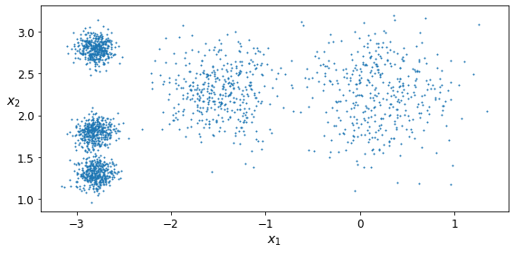
Fit and Predict#
Let’s train a K-Means clusterer on this dataset. It will try to find each blob’s center and assign each instance to the closest blob:
from sklearn.cluster import KMeans
k = 5
kmeans = KMeans(n_clusters=k, random_state=42)
y_pred = kmeans.fit_predict(X) ## NOTE fit_predict in one step! Unsupervised!!
Each instance was assigned to one of the 5 clusters:
y_pred
array([4, 0, 1, ..., 2, 1, 0], dtype=int32)
y_pred is kmeans.labels_
True
And the following 5 centroids (i.e., cluster centers) were estimated:
kmeans.cluster_centers_
array([[-2.80389616, 1.80117999],
[ 0.20876306, 2.25551336],
[-2.79290307, 2.79641063],
[-1.46679593, 2.28585348],
[-2.80037642, 1.30082566]])
Note that the KMeans instance preserves the labels of the instances it was trained on. Somewhat confusingly, in this context, the label of an instance is the index of the cluster that instance gets assigned to:
kmeans.labels_
array([4, 0, 1, ..., 2, 1, 0], dtype=int32)
Of course, we can predict the labels of new instances:
X_new = np.array([[0, 2], [3, 2], [-3, 3], [-3, 2.5]])
kmeans.predict(X_new)
array([1, 1, 2, 2], dtype=int32)
Decision Boundaries#
Let’s plot the model’s decision boundaries. This gives us a Voronoi diagram:
def plot_data(X):
plt.plot(X[:, 0], X[:, 1], 'k.', markersize=2)
def plot_centroids(centroids, weights=None, circle_color='w', cross_color='k'):
if weights is not None:
centroids = centroids[weights > weights.max() / 10]
plt.scatter(centroids[:, 0], centroids[:, 1],
marker='o', s=35, linewidths=8,
color=circle_color, zorder=10, alpha=0.9)
plt.scatter(centroids[:, 0], centroids[:, 1],
marker='x', s=2, linewidths=12,
color=cross_color, zorder=11, alpha=1)
## create a meshgrid, predict each instance, color according to label!
def plot_decision_boundaries(clusterer, X, resolution=1000, show_centroids=True,
show_xlabels=True, show_ylabels=True):
mins = X.min(axis=0) - 0.1
maxs = X.max(axis=0) + 0.1
xx, yy = np.meshgrid(np.linspace(mins[0], maxs[0], resolution),
np.linspace(mins[1], maxs[1], resolution))
Z = clusterer.predict(np.c_[xx.ravel(), yy.ravel()])
Z = Z.reshape(xx.shape)
plt.contourf(Z, extent=(mins[0], maxs[0], mins[1], maxs[1]),
cmap="Pastel2")
plt.contour(Z, extent=(mins[0], maxs[0], mins[1], maxs[1]),
linewidths=1, colors='k')
plot_data(X)
if show_centroids:
plot_centroids(clusterer.cluster_centers_)
if show_xlabels:
plt.xlabel("$x_1$", fontsize=14)
else:
plt.tick_params(labelbottom=False)
if show_ylabels:
plt.ylabel("$x_2$", fontsize=14, rotation=0)
else:
plt.tick_params(labelleft=False)
plt.figure(figsize=(8, 4))
plot_decision_boundaries(kmeans, X)
save_fig("voronoi_plot")
plt.show()
Saving figure voronoi_plot
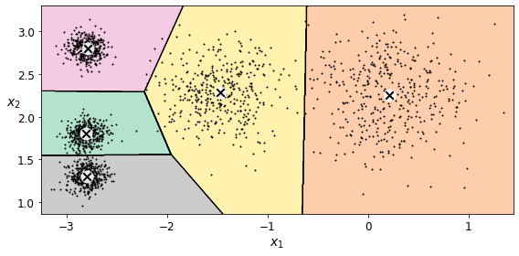
Not bad! Some of the instances near the edges were probably assigned to the wrong cluster, but overall it looks pretty good.
Hard Clustering vs Soft Clustering#
Rather than arbitrarily choosing the closest cluster for each instance, which is called hard clustering, it might be better measure the distance of each instance to all 5 centroids. This is what the transform() method does:
kmeans.transform(X_new)
array([[2.81093633, 0.32995317, 2.9042344 , 1.49439034, 2.88633901],
[5.80730058, 2.80290755, 5.84739223, 4.4759332 , 5.84236351],
[1.21475352, 3.29399768, 0.29040966, 1.69136631, 1.71086031],
[0.72581411, 3.21806371, 0.36159148, 1.54808703, 1.21567622]])
You can verify that this is indeed the Euclidian distance between each instance and each centroid:
np.linalg.norm(np.tile(X_new, (1, k)).reshape(-1, k, 2) - kmeans.cluster_centers_, axis=2)
array([[2.81093633, 0.32995317, 2.9042344 , 1.49439034, 2.88633901],
[5.80730058, 2.80290755, 5.84739223, 4.4759332 , 5.84236351],
[1.21475352, 3.29399768, 0.29040966, 1.69136631, 1.71086031],
[0.72581411, 3.21806371, 0.36159148, 1.54808703, 1.21567622]])
K-Means Algorithm#
The K-Means algorithm is one of the fastest clustering algorithms, and also one of the simplest
The KMeans class applies an optimized algorithm by default. To get the original K-Means algorithm (for educational purposes only), you must set init="random", n_init=1and algorithm="full". Otherwise, K-Means++ and Accelerated K-Means will run
K-Means Variability#
In the original K-Means algorithm, the centroids are just initialized randomly, and the algorithm simply runs a single iteration to gradually improve the centroids, as we saw above.
However, one major problem with this approach is that if you run K-Means multiple times (or with different random seeds), it can converge to very different solutions, as you can see below:
def plot_clusterer_comparison(clusterer1, clusterer2, X, title1=None, title2=None):
clusterer1.fit(X)
clusterer2.fit(X)
plt.figure(figsize=(10, 3.2))
plt.subplot(121)
plot_decision_boundaries(clusterer1, X)
if title1:
plt.title(title1, fontsize=14)
plt.subplot(122)
plot_decision_boundaries(clusterer2, X, show_ylabels=False)
if title2:
plt.title(title2, fontsize=14)
kmeans_rnd_init1 = KMeans(n_clusters=5, init="random", n_init=1,
algorithm="full", random_state=2)
kmeans_rnd_init2 = KMeans(n_clusters=5, init="random", n_init=1,
algorithm="full", random_state=5) ## note different random state!
plot_clusterer_comparison(kmeans_rnd_init1, kmeans_rnd_init2, X,
"Solution 1", "Solution 2 (with a different random init)")
save_fig("kmeans_variability_plot")
plt.show()
Saving figure kmeans_variability_plot
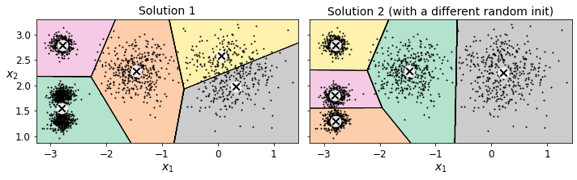
Inertia#
To select the best model, we will need a way to evaluate a K-Mean model’s performance. Unfortunately, clustering is an unsupervised task, so we do not have the targets. But at least we can measure the distance between each instance and its centroid. This is the idea behind the inertia metric:
kmeans.inertia_
211.5985372581683
As you can easily verify, inertia is the sum of the squared distances between each training instance and its closest centroid:
X_dist = kmeans.transform(X)
np.sum(X_dist[np.arange(len(X_dist)), kmeans.labels_]**2)
211.5985372581685
Multiple Initializations#
So one approach to solve the variability issue is to simply run the K-Means algorithm multiple times with different random initializations, and select the solution that minimizes the inertia. For example, here are the inertias of the two “bad” models shown in the previous figure:
kmeans_rnd_init1.inertia_
219.43539442771407
kmeans_rnd_init2.inertia_
211.5985372581683
As you can see, they have a higher inertia than the first “good” model we trained, which means they are probably worse.
When you set the n_init hyperparameter, Scikit-Learn runs the original algorithm n_init times, and selects the solution that minimizes the inertia. By default, Scikit-Learn sets n_init=10.
kmeans_rnd_10_inits = KMeans(n_clusters=5, init="random", n_init=10,
algorithm="full", random_state=2)
kmeans_rnd_10_inits.fit(X)
KMeans(algorithm='full', init='random', n_clusters=5, random_state=2)
As you can see, we end up with the initial model, which is certainly the optimal K-Means solution (at least in terms of inertia, and assuming \(k=5\)).
plt.figure(figsize=(8, 4))
plot_decision_boundaries(kmeans_rnd_10_inits, X)
plt.show()
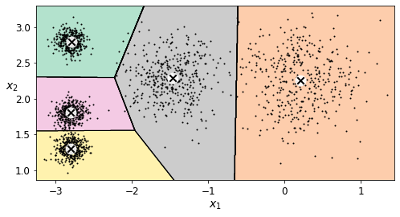
Mini-Batch K-Means#
Scikit-Learn also implements a variant of the K-Means algorithm that supports mini-batches (see this paper):
from sklearn.cluster import MiniBatchKMeans
minibatch_kmeans = MiniBatchKMeans(n_clusters=5, random_state=42)
minibatch_kmeans.fit(X)
MiniBatchKMeans(n_clusters=5, random_state=42)
minibatch_kmeans.inertia_
211.93186531476786
Mini-batch K-Means is much faster than regular K-Means. However, its performance is often lower (higher inertia), and it keeps degrading as k increases. Let’s plot the inertia ratio and the training time ratio between Mini-batch K-Means and regular K-Means:
from timeit import timeit # module to measure processing time!
times = np.empty((100, 2))
inertias = np.empty((100, 2))
for k in range(1, 101):
kmeans_ = KMeans(n_clusters=k, random_state=42)
minibatch_kmeans = MiniBatchKMeans(n_clusters=k, random_state=42)
print("\r{}/{}".format(k, 100), end="")
times[k-1, 0] = timeit("kmeans_.fit(X)", number=10, globals=globals())
times[k-1, 1] = timeit("minibatch_kmeans.fit(X)", number=10, globals=globals())
inertias[k-1, 0] = kmeans_.inertia_
inertias[k-1, 1] = minibatch_kmeans.inertia_
100/100
plt.figure(figsize=(10,4))
plt.subplot(121)
plt.plot(range(1, 101), inertias[:, 0], "r--", label="K-Means")
plt.plot(range(1, 101), inertias[:, 1], "b.-", label="Mini-batch K-Means")
plt.xlabel("$k$", fontsize=16)
plt.title("Inertia", fontsize=14)
plt.legend(fontsize=14)
plt.axis([1, 100, 0, 100])
plt.subplot(122)
plt.plot(range(1, 101), times[:, 0], "r--", label="K-Means")
plt.plot(range(1, 101), times[:, 1], "b.-", label="Mini-batch K-Means")
plt.xlabel("$k$", fontsize=16)
plt.title("Training time (seconds)", fontsize=14)
plt.axis([1, 100, 0, 6])
save_fig("minibatch_kmeans_vs_kmeans")
plt.show()
Saving figure minibatch_kmeans_vs_kmeans
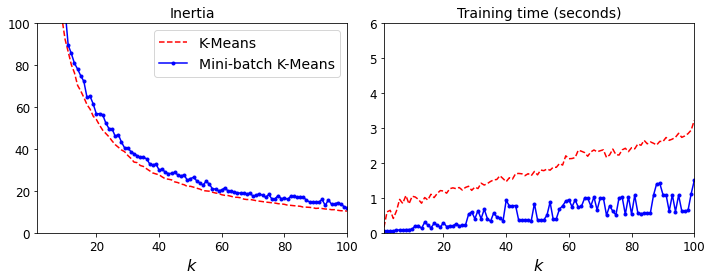
Finding the optimal number of clusters#
What if the number of clusters was set to a lower or greater value than 5?
kmeans_k3 = KMeans(n_clusters=3, random_state=42)
kmeans_k8 = KMeans(n_clusters=8, random_state=42)
plot_clusterer_comparison(kmeans_k3, kmeans_k8, X, "$k=3$", "$k=8$")
save_fig("bad_n_clusters_plot")
plt.show()
Saving figure bad_n_clusters_plot
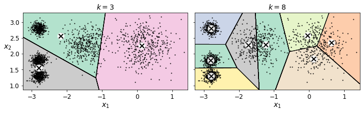
Ouch, these two models don’t look great. What about their inertias?
kmeans_k3.inertia_
653.2167190021556
kmeans_k8.inertia_
119.1198341610289
No, we cannot simply take the value of \(k\) that minimizes the inertia, since it keeps getting lower as we increase \(k\). Indeed, the more clusters there are, the closer each instance will be to its closest centroid, and therefore the lower the inertia will be. However, we can plot the inertia as a function of \(k\) and analyze the resulting curve:
kmeans_per_k = [KMeans(n_clusters=k, random_state=42).fit(X)
for k in range(1, 10)]
inertias = [model.inertia_ for model in kmeans_per_k]
plt.figure(figsize=(8, 3.5))
plt.plot(range(1, 10), inertias, "bo-")
plt.xlabel("$k$", fontsize=14)
plt.ylabel("Inertia", fontsize=14)
plt.annotate('Elbow',
xy=(4, inertias[3]),
xytext=(0.55, 0.55),
textcoords='figure fraction',
fontsize=16,
arrowprops=dict(facecolor='black', shrink=0.1)
)
plt.axis([1, 8.5, 0, 1300])
save_fig("inertia_vs_k_plot")
plt.show()
Saving figure inertia_vs_k_plot
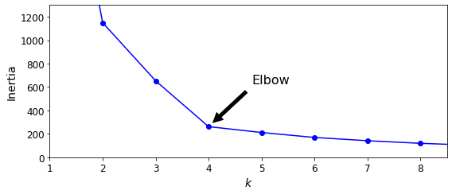
As you can see, there is an elbow at \(k=4\), which means that less clusters than that would be bad, and more clusters would not help much and might cut clusters in half. So \(k=4\) is a pretty good choice. Of course in this example it is not perfect since it means that the two blobs in the lower left will be considered as just a single cluster, but it’s a pretty good clustering nonetheless.
plot_decision_boundaries(kmeans_per_k[4-1], X)
plt.show()
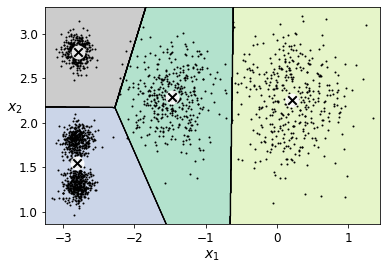
Another approach is to look at the silhouette score, the closer to 1, the better!
Let’s plot the silhouette score as a function of \(k\):
from sklearn.metrics import silhouette_score
silhouette_score(X, kmeans.labels_)
0.655517642572828
silhouette_scores = [silhouette_score(X, model.labels_)
for model in kmeans_per_k[1:]]
plt.figure(figsize=(8, 3))
plt.plot(range(2, 10), silhouette_scores, "bo-")
plt.xlabel("$k$", fontsize=14)
plt.ylabel("Silhouette score", fontsize=14)
plt.axis([1.8, 8.5, 0.55, 0.7])
save_fig("silhouette_score_vs_k_plot")
plt.show()
Saving figure silhouette_score_vs_k_plot
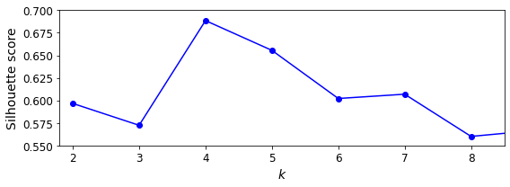
As you can see, this visualization is much richer than the previous one: in particular, although it confirms that \(k=4\) is a very good choice, but it also underlines the fact that \(k=5\) is quite good as well.
An even more informative visualization is given when you plot every instance’s silhouette coefficient, sorted by the cluster they are assigned to and by the value of the coefficient. This is called a silhouette diagram:
from sklearn.metrics import silhouette_samples
from matplotlib.ticker import FixedLocator, FixedFormatter
plt.figure(figsize=(11, 9))
for k in (3, 4, 5, 6):
plt.subplot(2, 2, k - 2)
y_pred = kmeans_per_k[k - 1].labels_
## determine the list of silhouette coefficients!!
silhouette_coefficients = silhouette_samples(X, y_pred)
padding = len(X) // 30
pos = padding
ticks = []
for i in range(k):
coeffs = silhouette_coefficients[y_pred == i] ## select coefficients per specific cluster
coeffs.sort() ## sort them before painting them
color = mpl.cm.Spectral(i / k)
plt.fill_betweenx(np.arange(pos, pos + len(coeffs)), 0, coeffs,
facecolor=color, edgecolor=color, alpha=0.7)
ticks.append(pos + len(coeffs) // 2)
pos += len(coeffs) + padding
plt.gca().yaxis.set_major_locator(FixedLocator(ticks))
plt.gca().yaxis.set_major_formatter(FixedFormatter(range(k)))
if k in (3, 5):
plt.ylabel("Cluster")
if k in (5, 6):
plt.gca().set_xticks([-0.1, 0, 0.2, 0.4, 0.6, 0.8, 1])
plt.xlabel("Silhouette Coefficient")
else:
plt.tick_params(labelbottom=False)
plt.axvline(x=silhouette_scores[k - 2], color="red", linestyle="--")
plt.title("$k={}$".format(k), fontsize=16)
save_fig("silhouette_analysis_plot")
plt.show()
Saving figure silhouette_analysis_plot
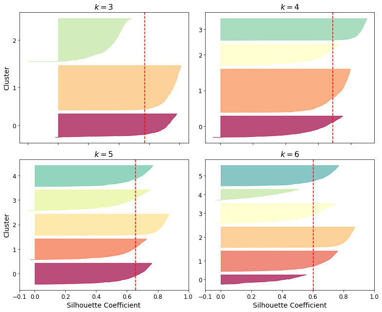
As you can see, \(k=5\) looks like the best option here, as all clusters are roughly the same size, and they all cross the dashed line, which represents the mean silhouette score.
Limits of K-Means#
X1, y1 = make_blobs(n_samples=1000, centers=((4, -4), (0, 0)), random_state=42)
X1 = X1.dot(np.array([[0.374, 0.95], [0.732, 0.598]])) ## rotation!
X2, y2 = make_blobs(n_samples=250, centers=1, random_state=42)
X2 = X2 + [6, -8]
X = np.r_[X1, X2]
y = np.r_[y1, y2]
plot_clusters(X)
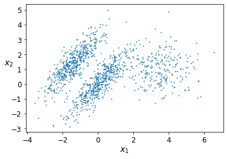
## in the good case, provide the initialization by hand!
kmeans_good = KMeans(n_clusters=3, init=np.array([[-1.5, 2.5], [0.5, 0], [4, 0]]), n_init=1, random_state=42)
kmeans_bad = KMeans(n_clusters=3, random_state=42)
kmeans_good.fit(X)
kmeans_bad.fit(X)
KMeans(n_clusters=3, random_state=42)
plt.figure(figsize=(10, 3.2))
plt.subplot(121)
plot_decision_boundaries(kmeans_good, X)
plt.title("Inertia = {:.1f}".format(kmeans_good.inertia_), fontsize=14)
plt.subplot(122)
plot_decision_boundaries(kmeans_bad, X, show_ylabels=False)
plt.title("Inertia = {:.1f}".format(kmeans_bad.inertia_), fontsize=14)
save_fig("bad_kmeans_plot")
plt.show()
Saving figure bad_kmeans_plot
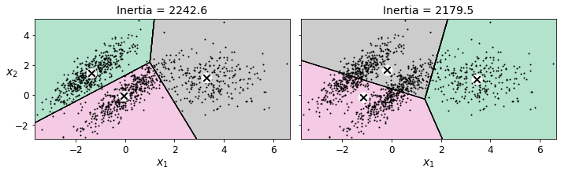
Clustering applications#
Using clustering for image segmentation#
# Download the ladybug image
import urllib
images_path = os.path.join("images", "unsupervised_learning")
os.makedirs(images_path, exist_ok=True)
DOWNLOAD_ROOT = "https://raw.githubusercontent.com/ageron/handson-ml2/master/"
filename = "ladybug.png"
print("Downloading", filename)
url = DOWNLOAD_ROOT + "images/unsupervised_learning/" + filename
urllib.request.urlretrieve(url, os.path.join(images_path, filename))
Downloading ladybug.png
('images/unsupervised_learning/ladybug.png',
<http.client.HTTPMessage at 0x152fcd1d0>)
from matplotlib.image import imread
image = imread(os.path.join(images_path, filename))
image.shape
(533, 800, 3)
from sklearn.cluster import KMeans
X = image.reshape(-1, 3) ## make it just single list of RGB channels (rather than a matrix)
print(X)
kmeans = KMeans(n_clusters=8, random_state=42).fit(X)
segmented_img0 = kmeans.cluster_centers_[kmeans.labels_] ## replace each RGB channel by the cluster center
segmented_img = segmented_img0.reshape(image.shape)
[[0.09803922 0.11372549 0.00784314]
[0.09411765 0.10980392 0.00392157]
[0.09411765 0.11372549 0. ]
...
[0.03921569 0.22745098 0. ]
[0.01960784 0.20392157 0. ]
[0.00784314 0.1882353 0. ]]
segmented_imgs = []
n_colors = (10, 8, 6, 4, 2)
for n_clusters in n_colors:
kmeans = KMeans(n_clusters=n_clusters, random_state=42).fit(X)
segmented_img = kmeans.cluster_centers_[kmeans.labels_]
segmented_imgs.append(segmented_img.reshape(image.shape))
plt.figure(figsize=(10,5))
plt.subplots_adjust(wspace=0.05, hspace=0.1)
plt.subplot(231)
plt.imshow(image)
plt.title("Original image")
plt.axis('off')
for idx, n_clusters in enumerate(n_colors):
plt.subplot(232 + idx)
plt.imshow(segmented_imgs[idx])
plt.title("{} colors".format(n_clusters))
plt.axis('off')
save_fig('image_segmentation_diagram', tight_layout=False)
plt.show()
Saving figure image_segmentation_diagram
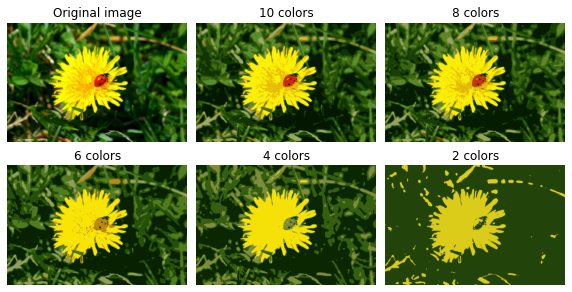
Using Clustering for Preprocessing (dimensionality reduction)#
Let’s tackle the digits dataset which is a simple MNIST-like dataset containing 1,797 grayscale 8×8 images representing digits 0 to 9.
from sklearn.datasets import load_digits
X_digits, y_digits = load_digits(return_X_y=True)
Let’s split it into a training set and a test set:
from sklearn.model_selection import train_test_split
X_train, X_test, y_train, y_test = train_test_split(X_digits, y_digits, random_state=42)
Now let’s fit a Logistic Regression model and evaluate it on the test set:
from sklearn.linear_model import LogisticRegression
log_reg = LogisticRegression(multi_class="ovr", solver="lbfgs", max_iter=5000, random_state=42)
log_reg.fit(X_train, y_train)
LogisticRegression(max_iter=5000, multi_class='ovr', random_state=42)
log_reg_score = log_reg.score(X_test, y_test)
log_reg_score
0.9688888888888889
Okay, that’s our baseline: 96.89% accuracy. Let’s see if we can do better by using K-Means as a preprocessing step. We will create a pipeline that will first cluster the training set into 50 clusters and replace the images with their distances to the 50 clusters, then apply a logistic regression model:
from sklearn.pipeline import Pipeline
pipeline = Pipeline([
("kmeans", KMeans(n_clusters=50, random_state=42)), ## transform will provide distance to clusters!
("log_reg", LogisticRegression(multi_class="ovr", solver="lbfgs", max_iter=5000, random_state=42)),
])
pipeline.fit(X_train, y_train)
Pipeline(steps=[('kmeans', KMeans(n_clusters=50, random_state=42)),
('log_reg',
LogisticRegression(max_iter=5000, multi_class='ovr',
random_state=42))])
pipeline_score = pipeline.score(X_test, y_test)
pipeline_score
0.9777777777777777
Clustering for Semi-supervised Learning#
Another use case for clustering is in semi-supervised learning, when we have plenty of unlabeled instances and very few labeled instances.
Let’s look at the performance of a logistic regression model when we only have 50 labeled instances:
n_labeled = 50
log_reg = LogisticRegression(multi_class="ovr", solver="lbfgs", random_state=42)
log_reg.fit(X_train[:n_labeled], y_train[:n_labeled])
log_reg.score(X_test, y_test)
0.8333333333333334
It’s much less than earlier of course. Let’s see how we can do better. First, let’s cluster the training set into 50 clusters, then for each cluster let’s find the image closest to the centroid. We will call these images the representative images:
k = 50
kmeans = KMeans(n_clusters=k, random_state=42)
X_digits_dist = kmeans.fit_transform(X_train)
## for each cluster, return the index of the instance that minimizises the distance!
representative_digit_idx = np.argmin(X_digits_dist, axis=0)
X_representative_digits = X_train[representative_digit_idx]
Now let’s plot these representative images and label them manually:
plt.figure(figsize=(8, 2))
for index, X_representative_digit in enumerate(X_representative_digits):
plt.subplot(k // 10, 10, index + 1)
plt.imshow(X_representative_digit.reshape(8, 8), cmap="binary", interpolation="bilinear")
plt.axis('off')
save_fig("representative_images_diagram", tight_layout=False)
plt.show()
Saving figure representative_images_diagram
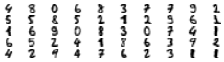
y_train[representative_digit_idx]
array([4, 8, 0, 6, 8, 3, 7, 7, 9, 2, 5, 5, 8, 5, 2, 1, 2, 9, 6, 1, 1, 6,
9, 0, 8, 3, 0, 7, 4, 1, 6, 5, 2, 4, 1, 8, 6, 3, 9, 2, 4, 2, 9, 4,
7, 6, 2, 3, 1, 1])
y_representative_digits = np.array([
4, 8, 0, 6, 8, 3, 7, 7, 9, 2, 5, 5, 8, 5, 2, 1, 2, 9, 6, 1, 1, 6,
9, 0, 8, 3, 0, 7, 4, 1, 6, 5, 2, 4, 1, 8, 6, 3, 9, 2, 4, 2, 9, 4,
7, 6, 2, 3, 1, 1])
Now we have a dataset with just 50 labeled instances, but instead of being completely random instances, each of them is a representative image of its cluster. Let’s see if the performance is any better:
log_reg = LogisticRegression(multi_class="ovr", solver="lbfgs", max_iter=5000, random_state=42)
log_reg.fit(X_representative_digits, y_representative_digits)
log_reg.score(X_test, y_test)
0.9222222222222223
Wow! We jumped from 83.3% accuracy to 92.2%, although we are still only training the model on 50 instances. Since it’s often costly and painful to label instances, especially when it has to be done manually by experts, it’s a good idea to make them label representative instances rather than just random instances.
Now, let’s propagate the labels to all the other instances in the same cluster
y_train_propagated = np.empty(len(X_train), dtype=np.int32)
## this assigns to each instance in X_train the corresponding label from the "representative" digit
for i in range(k):
y_train_propagated[kmeans.labels_==i] = y_representative_digits[i]
print(len(y_train_propagated),y_train_propagated[:10])
1347 [5 2 0 8 7 3 7 0 2 2]
log_reg = LogisticRegression(multi_class="ovr", solver="lbfgs", max_iter=5000, random_state=42)
log_reg.fit(X_train, y_train_propagated)
LogisticRegression(max_iter=5000, multi_class='ovr', random_state=42)
log_reg.score(X_test, y_test)
0.9333333333333333